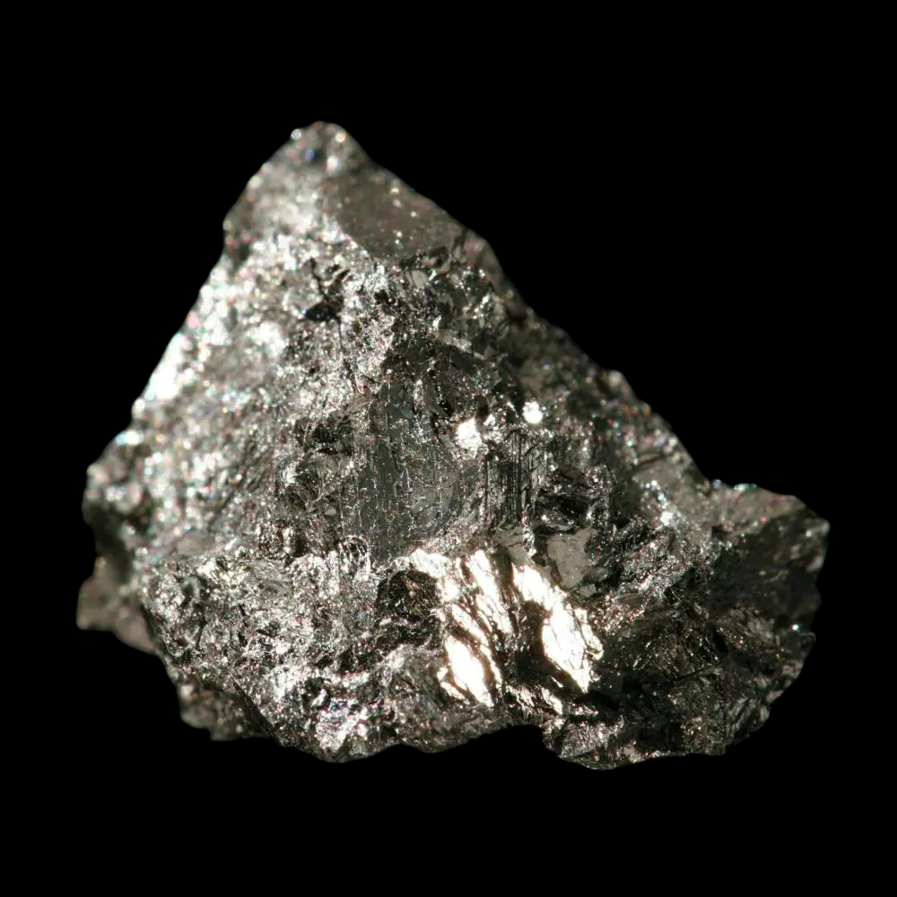
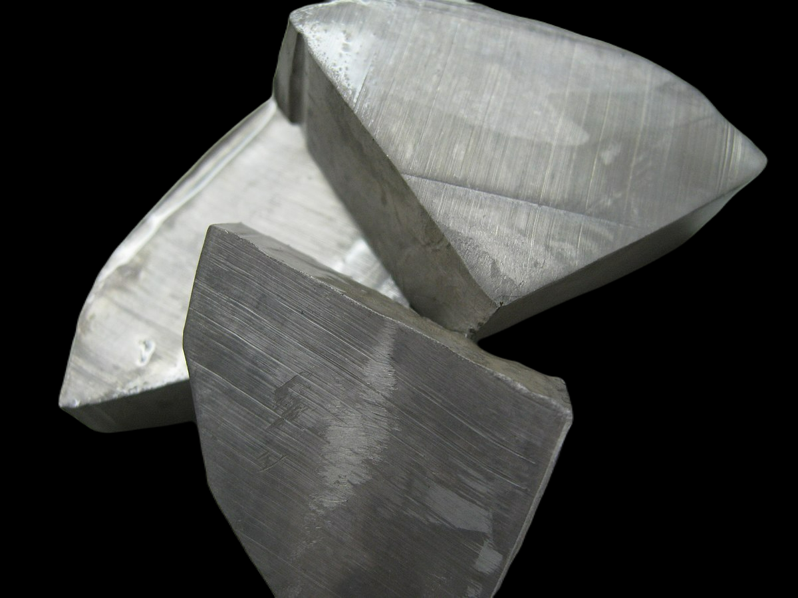
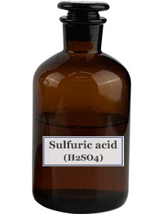

Hydrogen
[ H ]
Hydrogen
[ H ]
[ 1s1 ]
shape
Colorless gas, will glow with purple light
when converted to plasma. The picture above is
hydrogen in the plasma state.
position in the periodic table
| Atomic number (Z) | 1 |
| Group | group 1: hydrogen and alkali metals |
| Period | period 1 |
| Valence | valence I |
| Electron configuration | 1s1 |
| Electrons per shell | 1 |
PHYSICAL PROPERTIES
| State | gas |
|---|---|
| Melting point | (H2) 13.99 K (−259.16 °C, −434.49 °F) |
| Boiling point | (H2) 20.271 K (−252.879 °C, −423.182 °F) |
| Density | 0.08988 g/L |
| when liquid | 0.07 g/cm3 |
| (at m.p.) | (solid: 0.0763 g/cm3)[2] |
| when liquid (at b.p.) | 0.07099 g/cm3 |
| Triple point | 13.8033 K, 7.041 kPa |
| Critical point | 32.938 K, 1.2858 MPa |
| Heat of fusion | (H2) 0.117 kJ/mol |
| Heat of vaporization | (H2) 0.904 kJ/mol |
| Molar heat capacity | (H2) 28.836 J/(mol·K) |
CHEMICAL PROPERTIES
| Chemical Reactivity | Hydrogen is a highly reactive element, readily forming compounds through covalent bonding with other elements. |
|---|---|
| Common Compounds |
|
| Hydrogen Ion | Hydrogen can lose an electron to form a hydrogen ion (H+), which is important in chemistry and chemical reactions. |
| Hydrogenation | Hydrogen participates in hydrogenation reactions, where a hydrogen atom is added to an organic molecule, often resulting in the formation of saturated compounds. |
| Hydrogen Bonding | Hydrogen can form hydrogen bonds, where a hydrogen atom is bonded to an electronegative atom (such as oxygen or nitrogen), creating attractive forces between molecules. |
| Tritium Isotope | Hydrogen has the tritium isotope (H-3), a radioactive isotope used in nuclear energy and chemical research applications. |
MODULATION
| Water Electrolysis |
Water electrolysis is a widely used method to produce hydrogen. It involves the following steps:
|
|---|---|
| Example Reaction | 2H2O(l) → 2H2(g) + O2(g) |
| Steam Methane Reforming | Steam methane reforming is a primary industrial method for hydrogen production. It involves the reaction between methane (CH4) and steam (H2O) at high temperatures in the presence of a catalyst. The reaction produces hydrogen gas (H2) and carbon monoxide (CO). |
| Example Reaction | CH4(g) + H2O(g) → CO(g) + 3H2(g) |
| Coal Gasification | Coal gasification is a process that converts coal into a gas mixture containing hydrogen. It involves the reaction between coal and steam (H2O) and oxygen (O2) at high temperatures and pressures. The reaction produces a mixture of gases known as syngas, which contains hydrogen gas (H2) and carbon monoxide (CO). |
| Example Reaction | C + H2O(g) → CO(g) + H2(g) |
| Biomass Gasification | Biomass gasification is a process that converts organic materials, such as agricultural waste or wood, into a gas mixture containing hydrogen. It involves heating biomass in the absence of oxygen (anaerobic conditions) to produce syngas, which contains hydrogen gas (H2), carbon monoxide (CO), carbon dioxide (CO2), and other gases. |
| Example Reaction | CxHyOz + H2O(g) → CO(g) + H2(g) + CO2(g) |
APPLICATION
| Hydrogen Fuel Cells | Hydrogen fuel cells are devices that generate electricity by combining hydrogen and oxygen through an electrochemical process. They are used as a clean and efficient power source in various applications, including transportation (e.g., hydrogen-powered vehicles), backup power systems, and portable electronics. |
|---|---|
| Ammonia Production | Hydrogen is a key component in the production of ammonia (NH3), a widely used chemical in the manufacturing of fertilizers, cleaning agents, and industrial processes. Hydrogen reacts with nitrogen to form ammonia through the Haber-Bosch process. |
| Hydrogenation | Hydrogenation is a chemical process in which hydrogen is added to unsaturated compounds, such as oils and fats, to produce saturated compounds. It is commonly used in the food industry for the production of margarine, hydrogenated oils, and other food products. |
| Hydrogen as a Reducing Agent | Hydrogen can act as a powerful reducing agent in various chemical reactions. It is used in industries such as metallurgy, pharmaceuticals, and electronics for processes like metal refining, hydrogenation of organic compounds, and plasma etching in semiconductor fabrication. |
| Hydrogen as an Energy Storage Medium | Hydrogen can be used as an energy storage medium to store excess energy generated from renewable sources, such as solar and wind power. The stored hydrogen can be later converted back into electricity or used as a fuel for power generation or transportation. |
Helium
[ He ]Helium
[ He ]
[ 1s2 ]
shape
colorless gas, exhibiting a gray, cloudy glow
(or reddish-orange if an especially high voltage is used)
when placed in an electric field
position in the periodic table
| Atomic number (Z) | 2 |
| Group | group 18 (noble gases) |
| Period | period 1 |
| Valence | valence VIII |
| Electron configuration | 1s2 |
| Electrons per shell | 2 |
PHYSICAL PROPERTIES
| State | gas |
|---|---|
| Melting point | 0.95 K (−272.20 °C, −457.96 °F) (at 2.5 MPa) |
| Boiling point | 4.222 K (−268.928 °C, −452.070 °F) |
| Density | 0.1786 g/L |
| when liquid | 0.145 g/cm3 |
| (at m.p.) | |
| when liquid (at b.p.) | 0.125 g/cm3 |
| Triple point | 2.177 K, 5.043 kPa |
| Critical point | 5.1953 K, 0.22746 MPa |
| Heat of fusion | 0.0138 kJ/mol |
| Heat of vaporization | 0.0829 kJ/mol |
| Molar heat capacity | 20.78 J/(mol·K) |
CHEMICAL PROPERTIES
| Chemical Reactivity | Hydrogen is a highly reactive element, readily forming compounds through covalent bonding with other elements. |
|---|---|
| Common Compounds |
|
| Hydrogen Ion | Hydrogen can lose an electron to form a hydrogen ion (H+), which is important in chemistry and chemical reactions. |
| Hydrogenation | Hydrogen participates in hydrogenation reactions, where a hydrogen atom is added to an organic molecule, often resulting in the formation of saturated compounds. |
| Hydrogen Bonding | Hydrogen can form hydrogen bonds, where a hydrogen atom is bonded to an electronegative atom (such as oxygen or nitrogen), creating attractive forces between molecules. |
| Tritium Isotope | Hydrogen has the tritium isotope (H-3), a radioactive isotope used in nuclear energy and chemical research applications. |
MODULATION
| Water Electrolysis |
Water electrolysis is a widely used method to produce hydrogen. It involves the following steps:
|
|---|---|
| Example Reaction | 2H2O(l) → 2H2(g) + O2(g) |
| Steam Methane Reforming | Steam methane reforming is a primary industrial method for hydrogen production. It involves the reaction between methane (CH4) and steam (H2O) at high temperatures in the presence of a catalyst. The reaction produces hydrogen gas (H2) and carbon monoxide (CO). |
| Example Reaction | CH4(g) + H2O(g) → CO(g) + 3H2(g) |
| Coal Gasification | Coal gasification is a process that converts coal into a gas mixture containing hydrogen. It involves the reaction between coal and steam (H2O) and oxygen (O2) at high temperatures and pressures. The reaction produces a mixture of gases known as syngas, which contains hydrogen gas (H2) and carbon monoxide (CO). |
| Example Reaction | C + H2O(g) → CO(g) + H2(g) |
| Biomass Gasification | Biomass gasification is a process that converts organic materials, such as agricultural waste or wood, into a gas mixture containing hydrogen. It involves heating biomass in the absence of oxygen (anaerobic conditions) to produce syngas, which contains hydrogen gas (H2), carbon monoxide (CO), carbon dioxide (CO2), and other gases. |
| Example Reaction | CxHyOz + H2O(g) → CO(g) + H2(g) + CO2(g) |
APPLICATION
| Hydrogen Fuel Cells | Hydrogen fuel cells are devices that generate electricity by combining hydrogen and oxygen through an electrochemical process. They are used as a clean and efficient power source in various applications, including transportation (e.g., hydrogen-powered vehicles), backup power systems, and portable electronics. |
|---|---|
| Ammonia Production | Hydrogen is a key component in the production of ammonia (NH3), a widely used chemical in the manufacturing of fertilizers, cleaning agents, and industrial processes. Hydrogen reacts with nitrogen to form ammonia through the Haber-Bosch process. |
| Hydrogenation | Hydrogenation is a chemical process in which hydrogen is added to unsaturated compounds, such as oils and fats, to produce saturated compounds. It is commonly used in the food industry for the production of margarine, hydrogenated oils, and other food products. |
| Hydrogen as a Reducing Agent | Hydrogen can act as a powerful reducing agent in various chemical reactions. It is used in industries such as metallurgy, pharmaceuticals, and electronics for processes like metal refining, hydrogenation of organic compounds, and plasma etching in semiconductor fabrication. |
| Hydrogen as an Energy Storage Medium | Hydrogen can be used as an energy storage medium to store excess energy generated from renewable sources, such as solar and wind power. The stored hydrogen can be later converted back into electricity or used as a fuel for power generation or transportation. |
Lithium
[ Li ]

Berylium
[ Be ]Boron
[ B ]
Carbon
[ C ]Nitrogen
[ N ]Oxygen
[ O ]Fluorine
[ F ]
Neon
[ Ne ]

Sodium
[ Na ]
Magnesium
[ Mg ]
